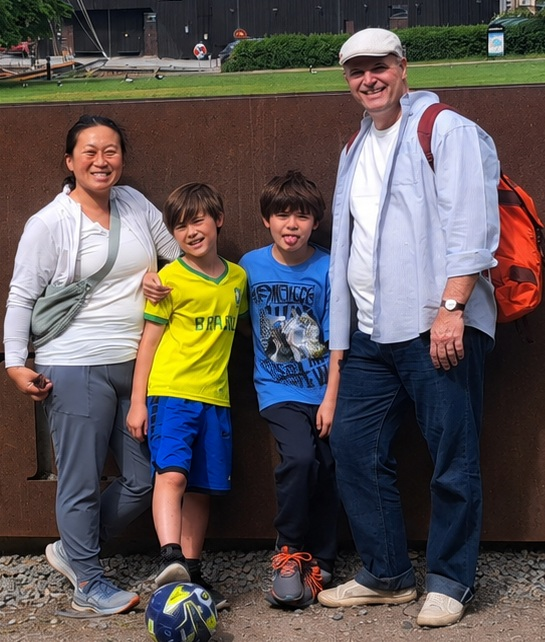
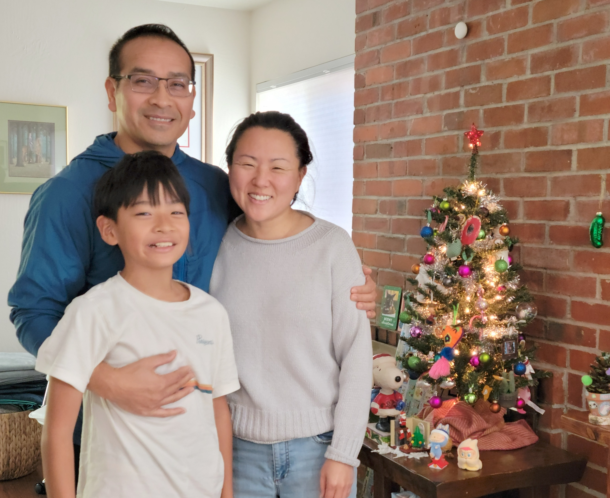
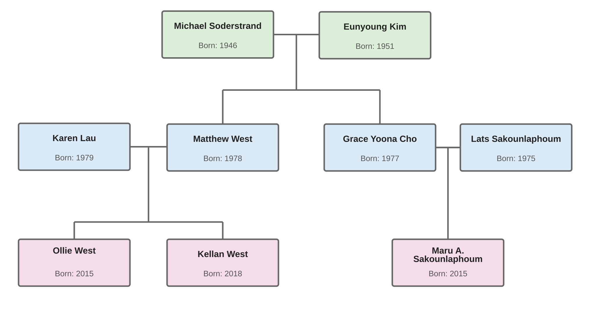

My Children & Grandchildren
Eunyoung and Michael have what is sometimes called a "blended family." However, as far as we are concerned, Matthew and Yoona are both our children. Matthew is now married to Karen, and Yoona is married to Lats.
Matthew and Karen have our two grandsons, Ollie and Kellan.

Yoona and Lats have our grandson Maru.

